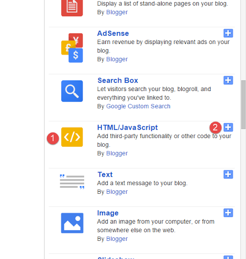
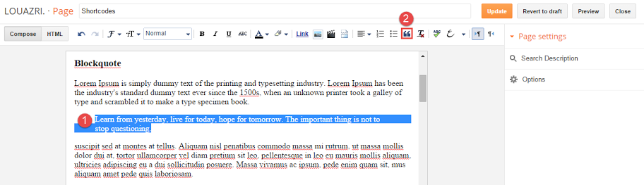
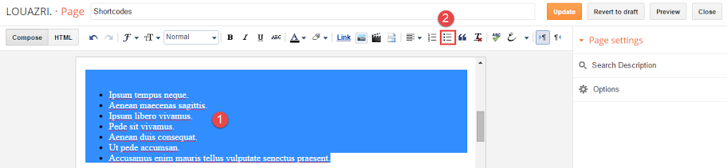
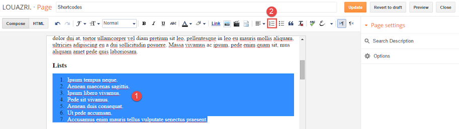
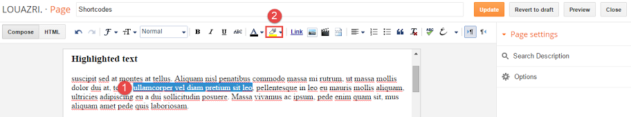

Maple
An Elegant Responsive Blogging Theme
- created: 03/28/2017
- latest update: 03/28/2017
- by: MyTemplatesLab
- www.MyTemplatesLab.com/
- email: mytemplateslab@gmail.com
Thank you for purchasing my theme. If you have any questions that are beyond the scope of this help file, please feel free to submit a ticket via my user page contact form here. Thanks so much!
Features
- Recent Version 1.0
- Bold & Unique Design
- 3 Blog Layouts New!
- 100% Fully Responsive Design
- Unlimited Colors
- Fully Customizable Design
- Search Engine Optimized (SEO)
- Light & Dark Style
- Adsense Ready
- Translation Ready
- Well Documented
- Well Supported
- Parallax Header Background
- Cross Browser Compatible
- jQuery and CSS3 Effects
- Super Easy To Use
- Sticky Main Menu
- Dropdown Menu
- Dropdown Menu Optimized For Mobile Devices.
- Related Posts
- Author Box Under Posts
- Footer Instagram Grid
- Site Background Support
- Built In G+/Twitter/Facebook Share Buttons
- Font Awesome Icons Integration
- Carousel Slider
- Full Images Quality
- Custom Error Page
- Clean Code
-
Shortcodes
- Highlighted Text
- Blockquote
- Lists
- Code Box
- Syntax Highlighter
- Contact Form
-
Custom Widgets
-
Flickr Feed
-
Instagram Feed
-
Facebook Like Box
-
Recent Posts With Thumbnails
-
Random Posts With Thumbnails
-
Recent Comments With Avatar
-
Recent Posts From Custom Label With Thumbnails
-
- & Much More...
Getting Started
Installation
-
Open your purchase folder, you will see a folder with name Maple-Theme-Xml. Open it, you will find a file with the name Maple-Theme.xml.
-
Open the XML file with a text editor (Notepad or something like that), then select all the text and copy it using (Ctrl+A, Ctrl+C in Window).
-
Now go to your Dashboard > Theme > Edit HTML.
-
In Editor HTML window, select all old code and paste the new code that you copied from the release file into code field. Then, click Save template.


Mobile Theme
-
By default, Blogger will use its own theme for your blog on mobile, so if you want to use Maple theme on mobile devices, please enable it first.
-
Go to your dashboard > Theme and click on gear button of mobile theme.
-
In Choose mobile template window, check "No. Show desktop template on mobile devices.", then click Save button.


Default Settings
Before you start blogging you might want to change some default settings that comes with the theme, in order to that go to your Dashboard > Layout > Edit Blog Posts Widget:

In the Configure Blog Posts window, you will see the following settings:

1: The number of posts that appears on the homepage.
2: The read more text.
3: Post author - (uncheck to disable).
4: Post date, you can change the format from the drop-down menu - (uncheck to disable).
5: Post comments - (uncheck to disable).
6: Blog layout type, you can change between 3 options (classic - grid - list). If you uncheck this option the theme will use the default layout which is classic.
7: Post Labels - (uncheck to disable).
8: Post share buttons - (uncheck to disable).
9: Post author box - (uncheck to disable).
10: When you are done editing click Save.
Now go to Dashboard > Settings > Other and do like the image below:

To improve your blog SEO, please enable Blogger Search Preferences. To do that, access your Settings menu, choose Search preferences tab and click Edit link on Meta tags section:

Next, check Yes option, then type your Blog Description into the text field (2) and click Save changes.

NB :
1. Blogger feed must be not redirected to another feed site like Feedburner.
2. Your blog or website not Private.
Header Settings
Header Background Image
-
To change the header background image, click on edit Header Image:
-
In Configure Image widget, you can upload the image from your computer using the 1st option, or if you have the image already uploaded to your host, then you can add the image direct link in the second field which is labeled number 2, and don't forget to click save when you are done editing.
-
It is preferable to use an image with the following dimensions or above: 1476x500


Upload Logo
-
Access your blog Dashboard > click Edit link on Header widget.
-
In Configure Header widget, you can upload the image from your computer using the 1st option, or if you have the image already uploaded to your host, then you can add the image direct link in the second field which is labeled number 2 and chose the placement to be instead of title and description, finally don't forget to click save when you are done editing.


Social Icons
-
To add social icons of your favorite social networks Go to your Dashboard > Layout > click Edit link on Social Icons widget.
-
In Configure Link List widget, On New Site Name field add the social network name that you want to show on the theme (eg: facebook, twitter, google+ etc...). And on New Site URL field add your profile or page URL and don't forget to click Save.
-
You can get all the available names that you can use from the following website, click on the icon that you want to use and copy its name without fa-:
-
The way you configure the social icons in the header is the same for the social icons in footer widget.


Menu Setup
-
To setup main menu access your blog Dashboard > Layout > click Edit link on Main Menu widget.
-
In Configure Link List widget, in New Site Name field add the name that you want to show on the menu (eg: Home, ShortCodes, Sample Page etc...), and in New Site URL field put the URL for that link.
-
To add a sub-menu to some of your menus, what you have to do is add an underscore at the beginning of the menu title and place it under the menu name that you want to have a sub menu. To make a sub-menu for an already existing sub-menu instead of adding one underscore you should add two underscores like that __ and place it under the sub menu which you want it to have a sub-menu by itself.
-
In the image above, we can see that the menu drop down has 3 sub-menus and one of the sub-menus has a sub-menu of it own. The above structure will give us a menu as shown in the image below:


Slider Settings
-
To Configure your slider go to Dashboard > click Edit link on Slider widget.
-
In Configure Labels widget, chose Selected Labels and click edit, then in the labels list select one label that you want to show posts from and don't forget to click Save when you are done editing.


If you didn't want to show the slider simply don't select any label :).
Custom Widgets
-
To add a custom widget Go to Dashboard > Layout, In the Sidebar Area click Add a Gadget.
-
Look for HTML/JavaScript widget and click on the add button.

-
In the Configure HTML/JavaScript widget, in the title field add the title of the widget, and in the content field add the code for the widget you want.
Facebook Like Box Code.
{ "widgetType": "facebook", "facebookURL": "https://www.facebook.com/Mytemplateslab" }Change Mytemplateslab with your page name, then click save.
Flickr Feed Widget Code.
{ "widgetType": "flickr", "flickrID": "52617155@N08", "widgetCount": 4 }Flickr Widget Options:
- 52617155@N08: You Flickr profile ID.
- 4: Number of pictures to show.
Recent Comments With Avatar Code.
{ "widgetType": "recent comments", "widgetCount": 4 }Recent Comments Options:
- 4: Number of posts to show.
Recent Posts With Thumbnails Code.
{ "widgetType": "recent posts", "widgetCount": 4 }Recent Posts Options:
- 4: Number of posts to show.
Random Posts With Thumbnails Code.
{ "widgetType": "random posts", "widgetCount": 4 }Random Posts Options:
- 4: Number of posts to show.
Posts From Custom Label Code.
{ "widgetType": "label posts", "widgetLabel": "Creative", "widgetCount": 4 }Label Posts Options:
- Creative: Change it with label you want to bring posts from, make sure to write it the exact same way that is written in your blog as it case sensitive.
- 4: Number of posts to show.
Instagram Feed Code.
{ "widgetType": "instagram", "userID": "3972569306", "token": "8676562317.1677ed0.bbbfe4e456db98cc523dfc26b4e03474", "widgetCount": 4, "sort": "most-recent" }Label Posts Options:
-
4: Number of pictures.
-
52617155@N08 : Your Flickr ID.
-
4: Number of comments.
-
4: Number of posts.
-
4: Number of posts.
-
Creative: change it with the label that you want to get posts from and it has to be written as in your blog since it is case sensitive.
-
4: Number of posts.
-
3972569306: You profile ID.
-
8676562317.1677ed0.bbbfe4e456db98cc523dfc26b4e03474: You token.
-
4: Number of pictures.
-
most-recent: Show newest to oldest images in your profile, you can use other these options for different sorting.
- least-recent - Oldest to newest.
- most-liked - Highest number of likes to lowest.
- least-liked - Lowest number likes to highest.
- most-commented - Hhighest number of comments to lowest.
- least-commented - Lowest number of comments to highest.
- random - Random order.
The code to add the Instagram feed in the sidebar is the same one for the footer, so if you want to add the Instagram feed in the footer repeat the same steps that have been mentioned above.
Footer Social Counter Widget.
To add a social counter in the footer go to your Dashboard > Layout > click Edit link for Footer Social Icons widget:
In Configure Link List Window put in the first field the code below and change it with your settings, and in the second field add your page URL and click Add Link button, when you finish editing don't forget to Save your changes.
facebook/190/Likes
- facebook: change it with the social network name as I explained in the Header Settings > Social Icons
- 190: Number of likes on your page
- Likes: change it with whatever text you want, for example, Followers, Subscribers...
The above structure will give you the following result.


Light Version
To make your blog have a light style add true in the Light Version widget like the image below:


Shortcodes
Blockquote
To create a Blockquote simply select the text that you want to add it in a Blockquote and click on the quote icon.

Numbered / Bullet Lists
To create a Bullet List simply select the text that you want to add it inside a list and click on Bullet List icon from text editor panel.

To create a Numbered List simply select the text that you want to add it inside a list and click on Numbered List icon from text editor panel.

Highlighted Text
To Highlight a text simply select it and click on Text Background Color icon from blog post text editor panel.

Code Box Code
<pre>You Code Here</pre>
Contact Form Code
<div class='contact_form'></div>
Translation
The theme is made to translate texts automatically depending on your blog language but there are some texts that you need to manually translate if your blog language wasn't English.
To do that you need to go to your Dashboard > Theme > Edit HTML > Search for this code: Translation Section

And translate months names and related posts text and don't forget to click Save Theme when you are done translating.

Customize Theme
The theme gives you the ability to have unlimited colors through Blogger customizer.
-
Access your Dashboard > Theme > Customize.
-
After you accessed the Theme Customizer go to background tab, here you can change the blog background.
-
If you want to change the blog main color, go to Advanced tab > Theme Settings > Change the default color to whatever color you like.


After you done editing don't forget to click on Apply to Blog button.
Release Notes
v1.0.0 – March 28th, 2017
Initial Release
Credits
Thanks so much to.